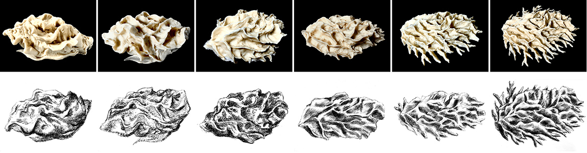
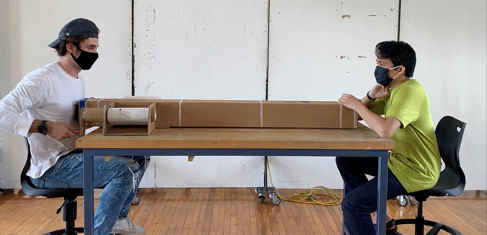
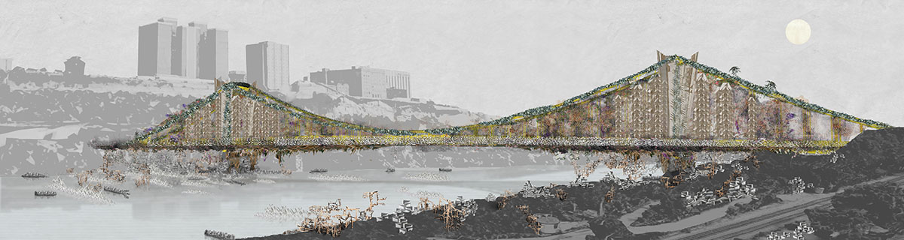
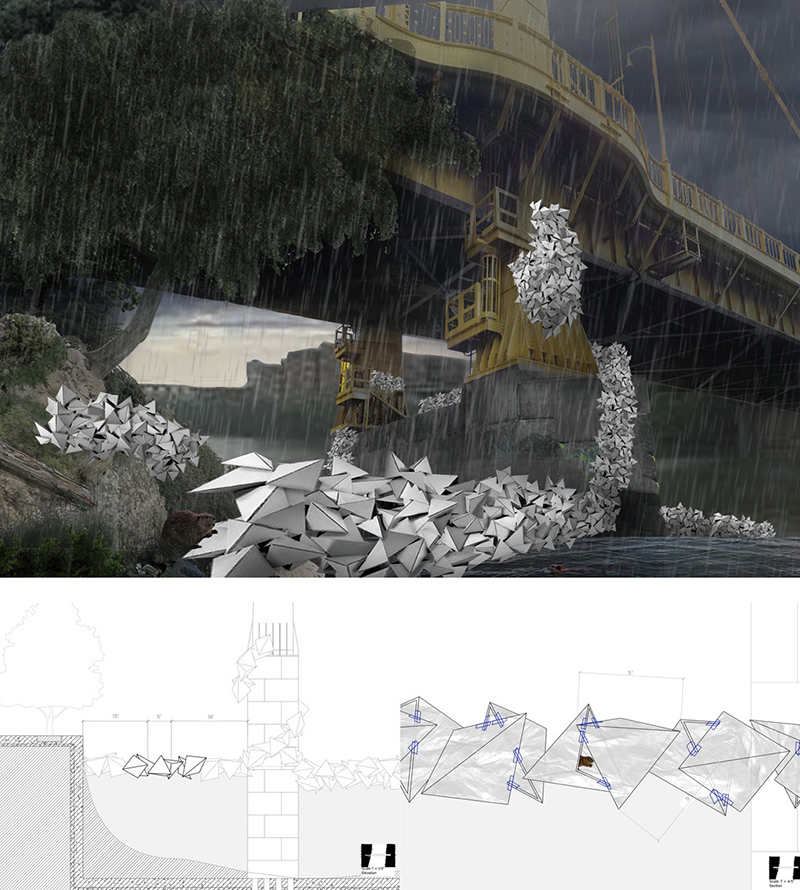
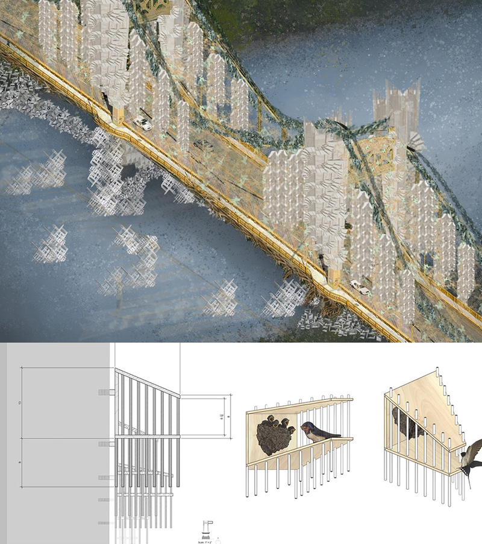

CRITICAL CYBORG
This course will act an introduction to a variety of modes of thinking, methods of work and scales of operation. The purpose will be to begin to develop a critical practice which considers materiality, virtuality, time and space. The studio will be rhizomic, it will form two interlocking groupings in order to expand the intellectual and creative cross connections.
1 Mass and Matter
The first story of cyborg is 'Movement'. In this chapter, students are asked to observe, analyze, represent, and translate movements. The piece of clay is an instrument of discovery. Clay has both a complicated chemistry and wide range of behaviors. This has had impact on landscape forms, flows of water and patterns of human and non-human life. If the concerns of this studio are to challenge definitive forms then clay will become for us a metaphor for both the earth (MASS) and artifice (Matter).

Mass and Analytical Drawing of the Mass, Jaden Luscher
2 Cyborg Prosthetics
Based on the movement, students can define a new species by hybriding two different function from movement. Prosthtics can be understood as not a additional device but a new species connecting two different objects. Creating Prosthtics can be a way in which two human bodies might be augmented by a reciprocating prosthetic device to perform an extended power. Being prolific with the ideas and speculating on contrasts of scale, on extremes of movement (from minute increments to exaggerated gesture), on translation from one sense to another, on the attenuation of senses (aural, visual, tactile, emotional, propinquity, olfactory) are critical approach to design prosthetics.

Heart to Heart, Aidan Smith and Aidtya Shinn
3 Colony
If movement was a reflection of an individual, or 'me', and 'prosthetics' was a reflection of the smallest unit of 'me and you', colony is a reflection of 'us', where there is a more complex, diverse and high granularity. Students propose a colony of their own chosen creatures to an abandoned Silo in Buffalo, New York. They analyze space with the eyes of the creatures, not with human eyes. Rather than looking at life as a specific object and examining its traits, they focused on how individual traits develop into clustered traits.

Collaborative (Digital) Drawing of 10th Street Bridge for Each System's Growth, Jinmo Rhee Studio

Parasiting Beaver's Habitats, Aidan Smith

Swallow's Co-Housing, Gloria Lee